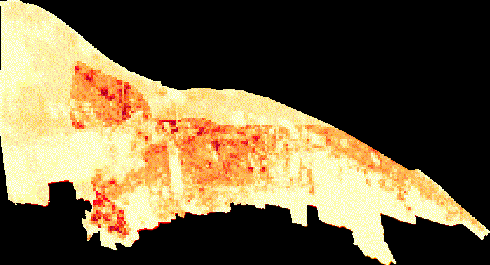
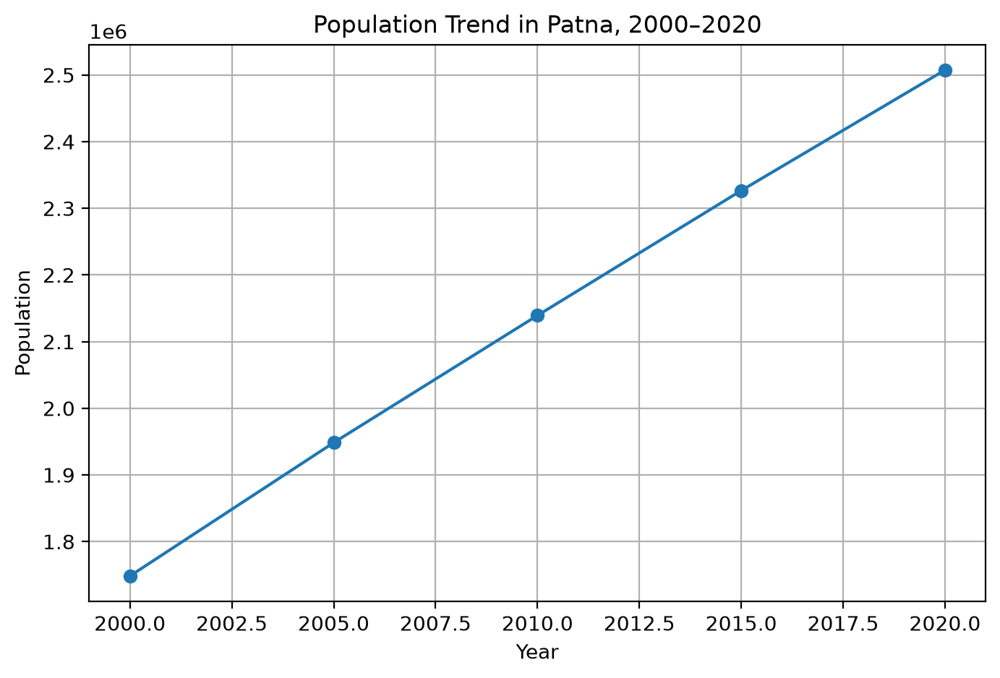

Study Overview
This study examines how residential population was distributed across Patna and how the population changed between 2000 and 2020.
The analysis uses the Global Human Settlement Layer (GHSL) Population dataset in Google Earth Engine. Population distribution is examined at five-year intervals: 2000, 2005, 2010, 2015 and 2020.
The analysis combines spatial maps, a population animation, a 2000–2020 change map and numerical population estimates to understand both the magnitude and spatial pattern of population change.
Population Distribution Maps
The interactive map displays residential population distribution for 2000, 2005, 2010, 2015 and 2020. Use the layer control to switch between the five observation years.
A consistent colour scale is used across the years, allowing changes in population concentration to be visually compared.
Population Animation: 2000–2020
The animation presents the five-year population observations sequentially. It provides a dynamic view of how the spatial distribution of residential population changes through time.

Population Change Map: 2000–2020
The change map represents the difference between population in 2020 and population in 2000.
Areas with positive values indicate an increase in population, while areas with negative values indicate a decrease. Areas with values close to zero represent relatively limited change over the study period.
Population Totals and Trend
Estimated Population by Year
| Year | Estimated Population |
|---|---|
| 2000 | 1,748,350 |
| 2005 | 1,948,444 |
| 2010 | 2,139,269 |
| 2015 | 2,326,667 |
| 2020 | 2,507,450 |
Population Trend
The trend graph shows a continuous increase in the estimated population of Patna throughout the study period.

Detailed Analysis and Discussion
5.1 Overall Population Growth
The GHSL population estimates indicate a continuous increase in Patna's residential population during the study period.
The population increased from approximately 1.75 million in 2000 to approximately 2.51 million in 2020.
In absolute terms, Patna gained approximately 759,100 people during the 20-year period.
The average increase over the full period was approximately 37,955 people per year. This is a simple average calculated from the total population increase over 20 years.
5.2 Five-Year Population Change
| Period | Population Increase | Percentage Increase |
|---|---|---|
| 2000–2005 | 200,094 | 11.45% |
| 2005–2010 | 190,825 | 9.79% |
| 2010–2015 | 187,398 | 8.76% |
| 2015–2020 | 180,783 | 7.76% |
The five-year comparison shows that population increased during every interval.
The highest five-year percentage increase occurred between 2000 and 2005, when population increased by approximately 11.45%.
The lowest percentage increase occurred between 2015 and 2020, at approximately 7.76%.
Therefore, the analysis indicates a pattern of continued population growth with a gradual moderation in the rate of growth. Population did not decline during any of the observed five-year intervals.
5.3 Spatial Distribution of Population
The population maps demonstrate that residential population is not uniformly distributed across the Patna urban boundary.
Higher population concentrations are visible in more intensively developed and residential portions of the city, while relatively lower population values occur in areas with less residential concentration.
Comparing the maps for 2000, 2005, 2010, 2015 and 2020 makes it possible to identify areas where population concentration strengthened over time.
The change map provides a direct comparison between the beginning and end of the study period. It helps identify locations where population increased, decreased or remained relatively stable.
5.4 Temporal Pattern
The temporal analysis demonstrates a consistent upward population trajectory.
Estimated population increased from 1,748,350 in 2000 to 1,948,444 in 2005, followed by 2,139,269 in 2010, 2,326,667 in 2015 and 2,507,450 in 2020.
The animation allows this change to be observed dynamically rather than viewing each year separately.
The trend graph and spatial maps complement each other. The graph explains how much the total population changed, while the maps provide information about where population was distributed.
5.5 Interpretation of the Growth Pattern
The sustained increase in population indicates continued demographic expansion within the selected Patna urban boundary during 2000–2020.
The analysis shows that population growth continued across the entire study period, although the percentage rate of growth became progressively lower across the five-year intervals.
Thus, Patna can be characterised as experiencing positive but gradually moderating population growth during the period analysed.
However, the GHSL population dataset by itself cannot establish the specific causes of this growth. Factors such as migration, natural population increase, residential development and other demographic processes would require additional datasets for further analysis.
5.6 Urban Planning Implications
The spatial distribution of population is important for urban planning because population concentration influences demand for housing, transportation, water supply, sanitation, healthcare, education and other public services.
Areas showing substantial population increases can therefore be considered potential priority areas for more detailed investigation of infrastructure capacity and service provision.
The analysis demonstrates the usefulness of gridded population data for urban studies because population change can be examined spatially rather than only through a single city-level population total.
5.7 Key Findings
Population increased by 759,100 people between 2000 and 2020.
The total estimated population increased by 43.42%.
Population increased in every five-year observation period.
The percentage increase declined from 11.45% in 2000–2005 to 7.76% in 2015–2020.
Population was not uniformly distributed throughout the urban boundary.
Areas with increasing population concentration may require closer examination of infrastructure and service requirements.
Methodology
Limitations
- GHSL provides gridded population estimates rather than household-level observations.
- The analysis depends on the selected Patna administrative boundary.
- Population estimates may differ from official census totals because of differences in data sources and estimation methods.
- A 100 m grid represents population spatially, but it does not imply that population is evenly distributed within each grid cell.
- The analysis identifies population change but does not establish the causal factors behind the change.
- Additional demographic, land-use, housing and socioeconomic datasets would be required to explain why particular areas experienced greater population change.
Data Sources
GHSL Population: JRC Global Human Settlement Layer (GHSL) Population, GHS_POP, 2000–2020.
Administrative Boundary: Indian urban local body boundary dataset from the Indian Administrative Boundaries repository.
Analysis Platform: Google Earth Engine.
Visualization: Python, GeoPandas, geemap, Folium and Matplotlib.